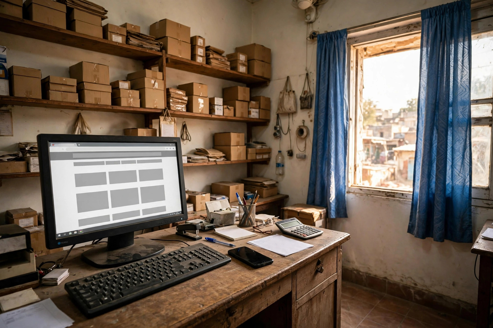

It is a fair question. A Facebook page is free, quick to set up, and familiar to customers in Mianwali who already spend time there. Photos go up in minutes, messages arrive directly, and a new offer can be shared the same day. With that much convenience, why would a busy shop, clinic or academy also pay attention to a website of its own?
The honest answer is that the two do different jobs. Facebook is good at conversation and timely updates. A website is good at being found on Google, organising information permanently, and presenting your business under your own control. Understanding that difference helps you spend effort where it will actually return something.
What a Facebook Page Does Well
Facebook is a social place, and it works best socially. Regular customers can follow you, see new stock or a changed timing, share a post with a friend, and message you with a question. For announcements, seasonal offers and everyday visibility among people who already know you, it is genuinely useful.
It is also forgiving for beginners. No hosting, no design decisions, and a format everyone recognises. For a very small business just starting online, a well-kept Facebook page plus a complete Google Business Profile is a sensible first step, and far better than having nothing at all.

Where a Facebook Page Falls Short
The limits appear when a new customer searches with intent. Someone typing a service plus Mianwali into Google is usually ready to buy, book or visit, and Google results favour proper web pages and Google profiles over Facebook posts. Old posts also sink quickly, so the detailed explanation you wrote months ago becomes almost impossible for a customer to find again.
- You do not control the layout, the rules or whether the page is shown.
- Information is organised by date, not by what a customer needs.
- Customers without Facebook, or who do not log in, see a restricted view.
- A page can be limited or lost through a platform problem you cannot fix.
None of this makes Facebook bad. It simply means a business that depends on it alone has built its home on rented land, and is hard to find at the exact moment of a Google search.
What Your Own Website Adds
A website gives every important service its own permanent page, written once and found repeatedly through search. A clinic can keep timings and services in one clear place. A showroom can organise categories properly. An academy can keep course pages ready for each admission season. You decide the order, the wording and what a visitor sees first.
A website also carries weight when customers compare you with businesses in bigger cities, as our article on competing online from Mianwali explains. It signals an established business, and it works together with your Google profile: the profile catches map searches, and the website gives the detail that turns interest into a call. See how this fits together on our SEO services in Mianwali page. Zaheer Seo Expert is based in Layyah and has no office in Mianwali, so this guidance for Mianwali businesses is given online and by phone from Layyah.
A Practical Way to Run Both Without Extra Burden
Running both does not mean doing everything twice. Keep one source of truth: your website and Google profile hold the stable facts, such as services, hours and contact details. Use Facebook for the timely layer: new arrivals, reminders, photos from the week and short announcements that link back to the relevant website page when detail is needed.
When something changes, update it in a set order: Google profile first, then the website, then a Facebook post about the change if it matters to customers. That small routine prevents the most common problem of all, three platforms showing three different phone numbers or timings.
So, Which Should You Choose First?
If you have neither, start with a complete Google Business Profile, then a Facebook page if your customers are active there, and build a simple website as soon as you realistically can. If you already have Facebook only, keep it, and treat the website as your next step rather than a replacement. If you have a website only, a modest Facebook presence can still help you stay visible between searches.
For a Mianwali business, this is not really an either-or choice. Facebook keeps you in the daily conversation, while your own website makes you findable, organised and in control. Together, they cover both the customers who know you and the many who are still looking.
Frequently Asked Questions
Is a Facebook page enough for a Mianwali business?
It can be a reasonable start for a very small business, especially for updates and messages. But a Facebook page is hard to organise as a lasting reference, depends on a platform you do not control, and is weaker than a website for Google searches.
What can a website do that a Facebook page cannot?
A website gives each service its own page that can be found on Google, presents information in your order, and stays under your control. It also looks more established when customers compare you with competitors in bigger cities.
Should I stop using Facebook if I get a website?
No. Use Facebook for timely updates, photos and conversation, and use the website as the complete, organised home of your services. Link them to each other and keep the phone number and hours the same on both.
Does Zaheer Seo Expert build presence for Mianwali from Layyah?
Zaheer Seo Expert is based in Layyah and has no office in Mianwali. Website and SEO guidance for Mianwali businesses is provided online and by phone from Layyah.
Want More Customers From Google?
Call 0327 7350830 or email seozaheer14@gmail.com. Zaheer Seo Expert, Layyah - Rajan Shah Road, Rana Nagar, Chak 116 TDA, Pakistan. Open 24 hours.
Get Your SEO Strategy →